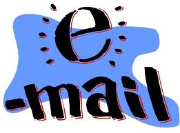

|
E-mail en antispam Op deze pagina hebben we het over een alternatief voor e-mail clients zoals Outlook én hoe men zich kan 'wapenen' tegen ongewenste spamberichten. Indien je een webbrowser gebruikt om e-mails te lezen (webmail), is het niet nodig een aparte e-mailclient en/of antispamprogramma te installeren. Vooreerst toch wat info over het configureren van je mailprogramma. Op deze pagina kan je lezen hoe je vb. Outlook kan configureren voor de exchange servers van de KU Leuven. Deze pagina geeft je nog meer gedetailleerde informatie over mail- en andere configuraties. IMAP (Internet Message Access Protocol) is een protocol om e-mails te ontvangen. SMTP (Simple Mail Transfer Protocol) is een protocol is om e-mails te versturen. Je werkt dus met een combinatie van IMAP en SMTP. De KU Leuven ondersteunt het klassieke POP protocol (waarbij je e-mails niet op de server blijven staan) niet meer. Internet Message Access Protocol (IMAP) geeft je directe toegang tot je emails op de servers binnen de KU Leuven. Het laat je toe email te ontvangen en te bewaren in een mappen structuur. Je kan hiermee folders aanmaken, verplaatsen en verwijderen. Je emails blijven op de server staan zodat je vanop verschillende locaties je mails kan raadplegen. Configuratie
van je mailprogramma: (zie ook: https://admin.kuleuven.be/icts/services/email/imap-configuratie) Het is mogelijk je studentenmailbox door te sturen naar een andere KU Leuven mailbox: https://icts.kuleuven.be/apps/faq/?repid=faq_antwoord&x_faq_id=2 De lokale kopies van de programma's kan je hier vinden. Naam: Mozilla Thunderbird Categorie: e-mail client Waardeoordeel: 5 (indien je een e-mail client nodig
hebt, niet nodig wanneer je webmail via je browser gebruikt) Beschrijving: Naam: Spamihilator Categorie: antispam Waardeoordeel: 5 (indien je een e-mail client nodig
hebt, niet nodig wanneer je webmail via je browser gebruikt) Beschrijving: |